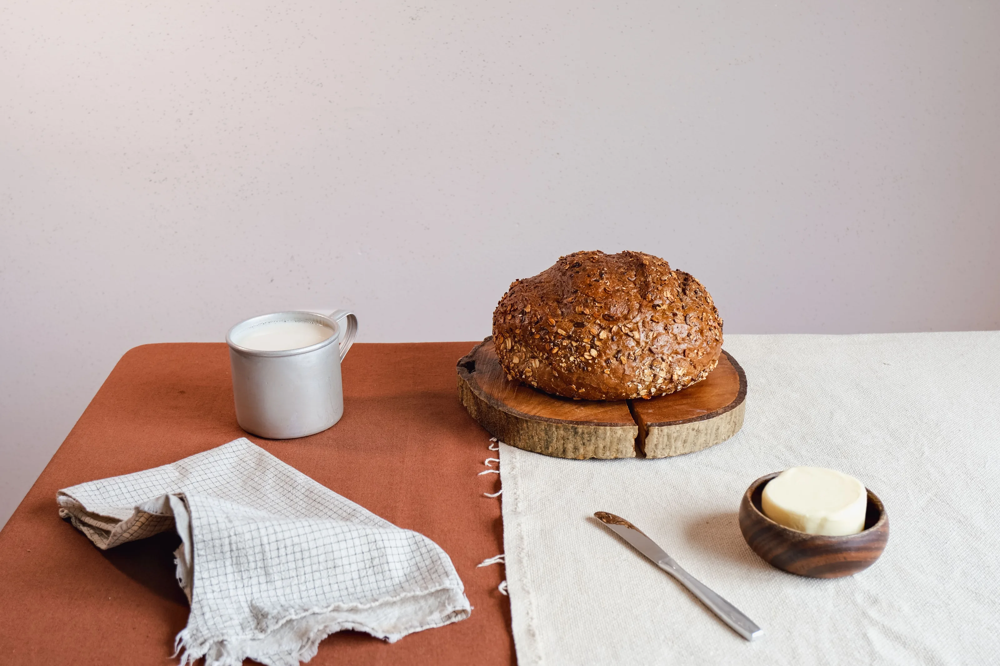
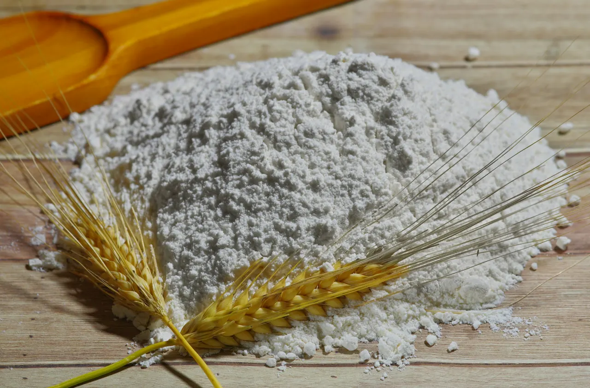
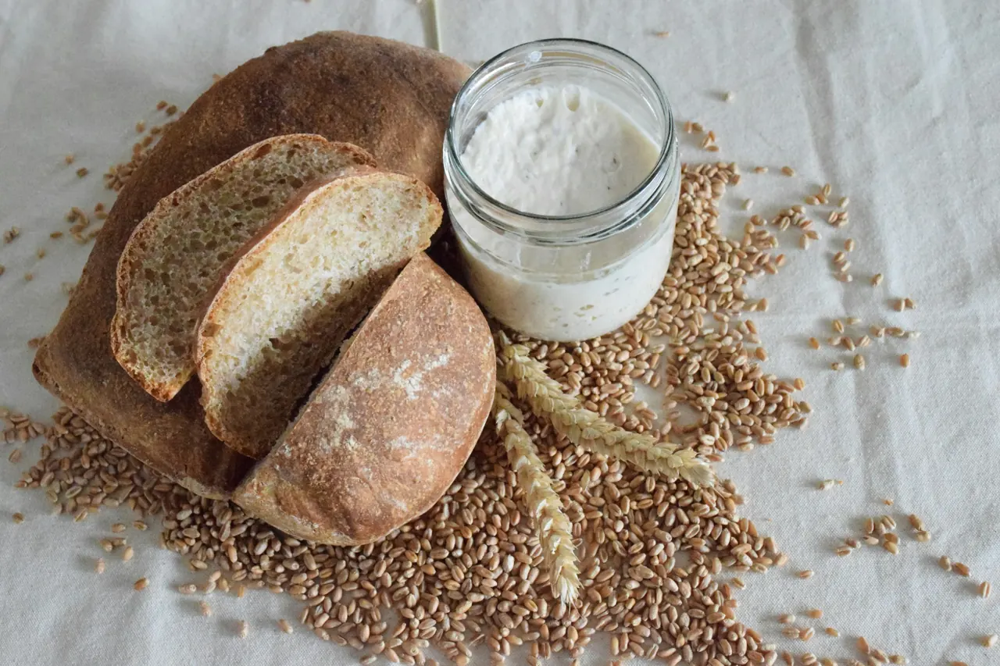
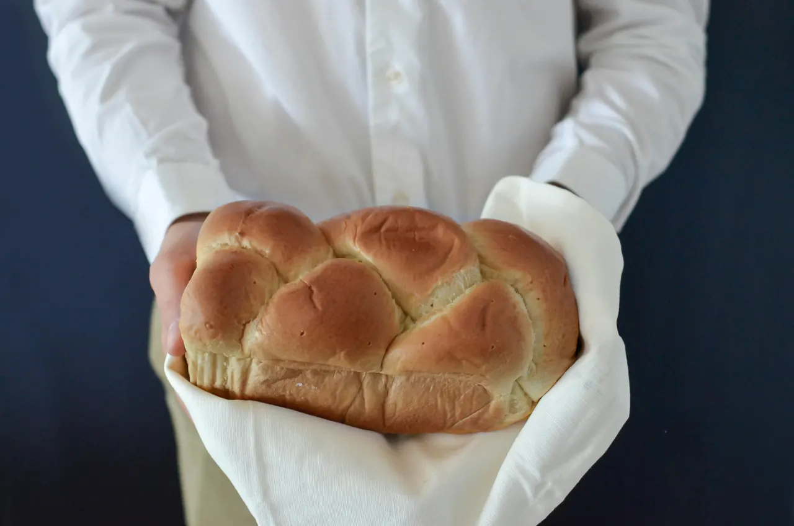
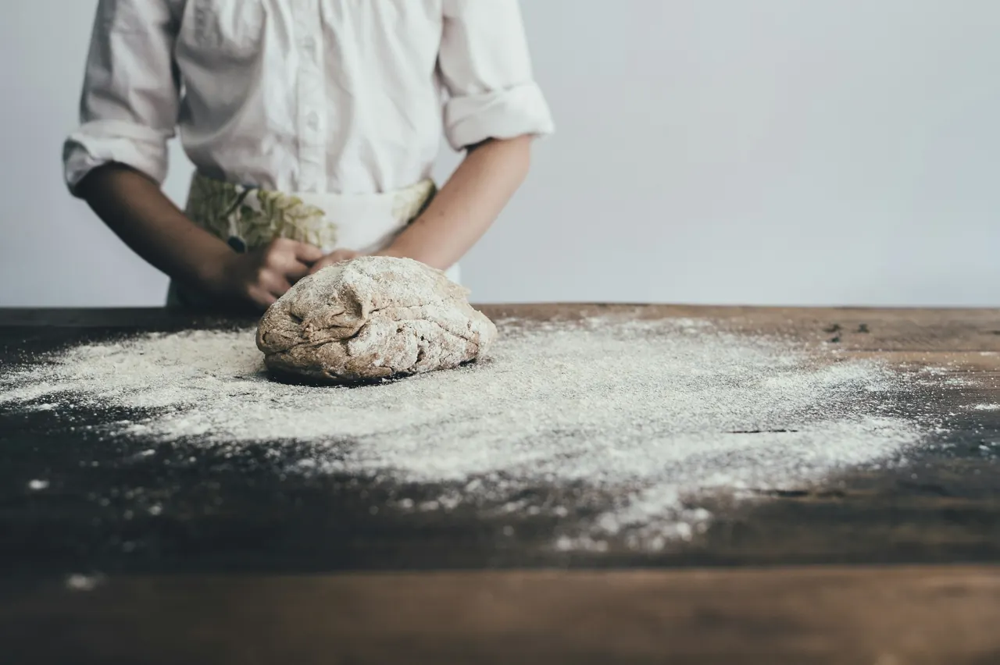
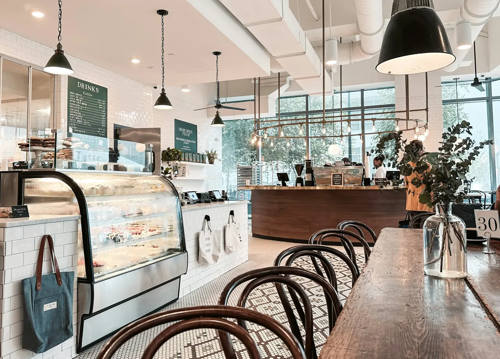

3
Flours, milled on stone
Wheat, rye and spelt, milled on stone in Central Texas the week we bake them.

Sourdough bakery1110 E 6th Street, Austin
Flour, water and time.
Sourdough rested for thirty six hours. Pastry laminated by hand. The first loaves come out of the oven at six.
01 · The story
Three flours milled on stone   
3
Wheat, rye and spelt, milled on stone in Central Texas the week we bake them.
36h
The starter is older than the bakery and is fed twice a day. Every dough rests thirty six hours in the cold; that is where the flavour and the open crumb come from.
6AM
Pastry is folded by hand with cultured butter. The ovens are lit at 3 AM and the first loaves come out at six.

02 · From flour to crust
Step 1
Wheat, rye and spelt from a Texas mill, milled on stone and used within the week, while it still smells of grain.
Step 2
The starter goes in at noon. The dough rests in the cold for thirty six hours and turns sour, sweet and alive.
Step 3
Every loaf is shaped by hand and set in a linen basket. Pastry is folded with butter into eighty one layers.
Step 4
Into a stone deck oven at 3 AM, with steam for the crust. Out at six, dark and crackling as it cools.
04 · Mornings at Miga
Tap a photo to open it
05 · Visit
Open today
Tuesday to Saturday 7 AM to 7 PM. Sunday 8 AM to 3 PM. Monday closed.
Bread is out at 7 (8 on Sunday). Croissants often sell out by noon, so order ahead to hold yours.

06 · Order ahead
Pick a day and a time, tell us how many croissants, and we keep them warm at the counter. Pay when you collect.